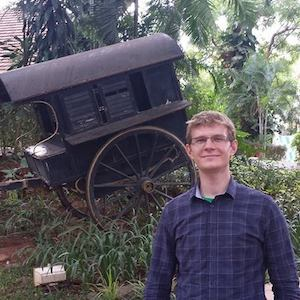

Aleksandar Chakarov

Contact Information
CU Programming Languages Lab
Room ECCS 121
Engineering Center
Univeristy of Colorado Boulder
Boulder, CO, USA 80309


About
I am a recent alumnus of the Ph.D. program in Computer Science at the University of Colorado
Boulder. I had the priviledge to be advised by Prof. Sriram Sankaranarayanan. My area of focus is the verification of
infinte-state discrete-time stochastic systems using martingale theory (PhD thesis ).
I am a member of the CU Programming Languages and Verification (CUPLV) and Verification of Cyber
Physical Systems (VCPS) groups. My research interests broadly include formal methods, program analysis,
static analysis, Machine Learning for PL, probabilistic modeling and probabilistic reasoning with applications to
privacy, confidentiality and security.
Recent News
- I am now looking for a position that would allow me to combine my problem solving skills and formal methods background!
- Oct 2016: I was invited to serve as a PC member for SAS'17!
- Sept 2016: I will remain at CUPLV for a short term post-doc with Drs. Pavol Cerny, Sriram Sankaranarayanan and Ashutosh Trivedi working on the STAC project!
- Aug 2016: I was invited to serve on the ERC for PLDI'17!
- Aug 2016: I graduated from CU Boulder with PhD in Computer Science!
- Jul 2016: I successfully defended my PhD thesis (PhD thesis , slides)
- Apr 2016: I presented two papers at TACAS 2016 in Eindhoven, NL.
- Dec 2015: Our two paper submissions were accepted at TACAS 2016!
Publications
Here is a list of my publications:
- Aleksandar Chakarov, Yuen-Lam Voronin, Sriram Sankaranarayanan, Deductive Proofs of Almost Sure Persistence and Recurrence Properties. International Conference on Tools and Algorithms for the Construction and Analysis of Systems. Springer Berlin Heidelberg, 2016.
- Olivier Bouissou, Eric Goubault, Sylvie Putot, Aleksandar Chakarov and Sriram Sankaranarayanan, Uncertainty Propagation using Probabilistic Affine Forms and Concentration of Measure Inequalities. International Conference on Tools and Algorithms for the Construction and Analysis of Systems. Springer Berlin Heidelberg, 2016.
- Aleksandar Chakarov, Aditya Nori, Sriram Rajamani, Shayak Sen, Deepak Vijaykeerthy, Debugging Machine Learning Tasks. arXiv preprint arXiv:1603.07292 (2016).
- Aleksandar Chakarov, Sriram Sankaranarayanan, Expectation Invariants for Probabilistic Program Loops as Fixed Points. 21st International Static Analysis Symposium (SAS) 2014: 85-100. Radhia Cousot Young Researcher Best Paper Award (details here and here).
- Aleksandar Chakarov, Sriram Sankaranarayanan, Probabilistic Program Analysis with Martingales. International Conference on Computer Aided Verification. Springer Berlin Heidelberg, CAV 2013: 511-526.
- Sriram Sankaranarayanan, Aleksandar Chakarov, and Sumit Gulwani, Static Analysis for Probabilistic Programs: Inferring Whole Program Properties from Finitely Many Paths. PLDI 2013: 447-458. Distinguished Paper Award (details).
- Paul Givens, Aleksandar Chakarov, Sriram Sankaranarayanan, Tom Yeh, Exploring the internal state of user interfaces by combining computer vision techniques with grammatical inference. ICSE 2013: 1165-1168.
- F. Blanchet-Sadri, Aleksandar Chakarov, Lucas Manuelli, Jarett Schwartz, and Slater Stich, Constructing Partial Words with Subword Complexities not Achievable by Full Words. Theoretical Computer Science, Volume 432, 11 May 2012, Pages 21--27.
- Aleksandar Chakarov, Sriram Sankaranarayanan, Georgios Fainekos, Combining Time and Frequency Domain Specifications For Periodic Signals. In the Proceedings of Runtime Verification, San Francisco, California, Sep. 2011.
- F. Blanchet-Sadri, Aleksandar Chakarov, Lucas Manuelli, Jarett Schwartz, and Slater Stich, Recurrent Partial Words. WORDS 2011: 71--82
- F. Blanchet-Sadri, Bob Chen and Aleksandar Chakarov, Minimum Number of Holes in Unavoidable Sets of Partial Words of Size Three. In C. S. Iliopoulos and W. F. Smyth (Eds.), IWOCA 2010, 21st International Workshop on Combinatorial Algorithms, July 26-28, 2010, London, United Kingdom, Lecture Notes in Computer Science, Vol. 6460, Springer-Verlag, Berlin, Heidelberg, 2011, 43--55.
- Peter Golbus, Robert W. McGrail, Tomasz Przytycki, Mary Sharac and Aleksandar Chakarov, Tricolorable Torus Knots are NP-Complete. Proceedings of the 47th ACM Southeast Conference (ACMSE 200), Clemson, South Carolina, March 2009.